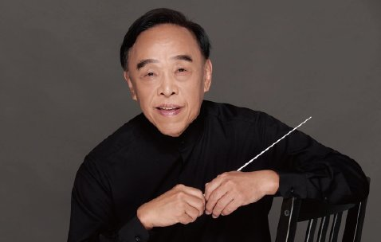
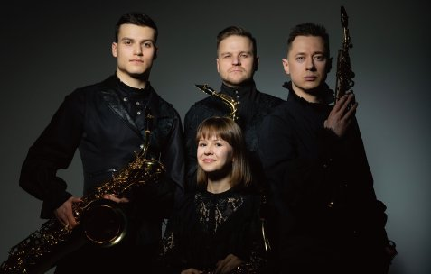
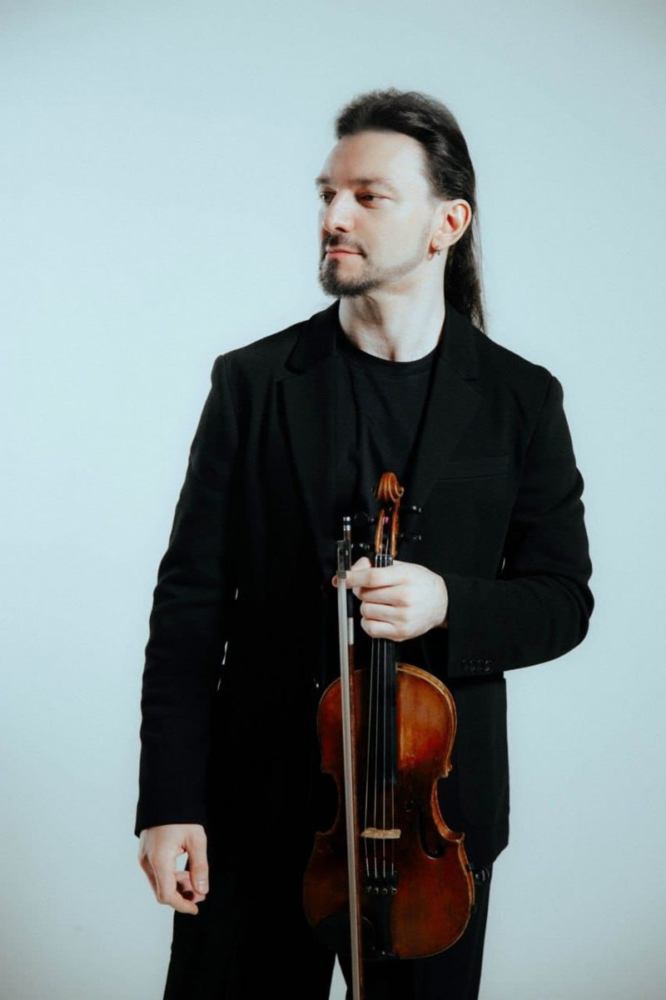
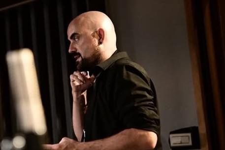
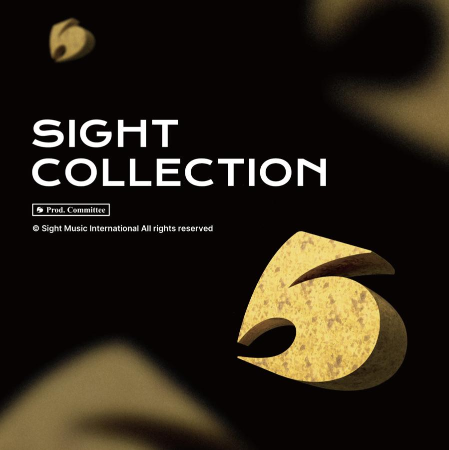

東京佼成管樂團 Ｘ 侯宇彪 説一段，被傳承下來的聲音
「一曲聲歇成往事；一聲再起續傳承。」
7.24 FRI. 19:30 臺北國家兩廳院音樂廳
SCROLL↓
參與人員介紹 About the Artist
← 左右滑動切換 →

東京佼成管樂團 Tokyo Kosei Wind Orchestra
東京佼成管樂團於1960年5月以「佼成吹奏樂團」成立，1973年更名為「東京佼成管樂團」，並自2022年4月起以「一般社團法人東京佼成管樂團」名義持續運作，是日本最具代表性的職業管樂團之一。
2024年4月起，由大井剛史擔任第六任常任指揮，中橋愛生擔任樂藝員；桂冠指揮為佛瑞德里克・費奈爾，特別客席指揮為托馬斯・桑德林，首席客席指揮為飯森範親。
樂團演出曲目涵蓋吹奏樂原創作品、古典改編、流行及跨界音樂等多元風格，以卓越的音樂藝術性深受各地觀眾喜愛，並透過大量錄音與媒體演出，持續推動吹奏樂文化的提升、普及與發展。
團員名單
指揮大井剛史
樂團首席林裕子
Picc.工藤美幸（Fl）
Fl.坂本伽耶、白戸美帆、西岡あかね、東佳音
Ob.石井智章、笹平幸那
E. Hn.藤原博司
Fg.柿沼麻美、栗林愛理
C. Fg.君塚広明
Es Cl.松生知子
B♭Cl.林裕子*、本田有里恵、浦畑尚吾、野田祐太郎、後藤榛花、近野千昌、徳武敦、河西拓也、小野寺綠
B. Cl.泊明里、森卓也
CB. Cl.草野裕輝
Sax都築惇、江川良子、宮越敦士、本堂誠
Tp.河原史弥、閏間健太、川村大、後藤慎介、富岡彩乃、依田泰幸
Hn.堀風翔、小山千鶴、佐藤文香、藤井春香、山下裕也
Tb.今村岳志、安久津理子、竹内優彦、山内正博
B. Tb.恵藤康充
Euph.岩黒綾乃、大山智
Tuba池田侑太、松本匡偉
Cb.前田芳彰
Timp.越中亮太
Perc.石川大樹、岩下美香、柴原誠、西久保友広、二ツ木千由紀、松下真也、山本貢大、定成庸治
Harp神谷朝子
Pf.神原颯大
事務職員篠原華、勝川本久、梅津敦、森奈那子、古畑玲、佐原由起
* 樂團首席

侯宇彪 指揮｜管樂界的說書人
台灣管樂界重要推手侯宇彪，現任台北青年管樂團藝術總監。數十年投入指揮、教育與推廣，見證並引領台灣管樂文化的傳承與發展。長年致力於管樂教育、演奏推廣與人才培育，對台灣管樂發展具有深遠影響。憑藉豐富的教學與舞台經驗，持續推動國內管樂文化扎根與國際交流，為台灣管樂界重要的領航人物之一。

莫斯科薩克斯風四重奏 Moscow Saxophone Quartet｜響徹極北雪域的頂尖之音
莫斯科薩克斯風四重奏由 Nikita Zimin 等四位國際間獲獎無數的頂尖音樂家組成，融合豐富經驗的權威與新銳，展現兼具傳承與創新的聲音。演出曲目涵蓋巴洛克至當代，將古典與現代作品交織重現並以細膩改編及默契合奏賦予薩克斯風新生命。每次登台皆以絕妙音色、精確節奏與情感張力展現俄羅斯薩克斯風藝術頂尖水準。

Alexander Kuzavov 小提琴｜編曲
出生於莫斯科，畢業於莫斯科柴可夫斯基音樂學院，師事著名小提琴家 Marina Yashvili 教授，並以優異成績完成研究所學業。
曾榮獲俄羅斯、斯洛維尼亞及突尼西亞等多項國際小提琴比賽與音樂節獎項，包括斯洛維尼亞 Bled 國際小提琴大賽首獎及 EMCY 特別獎。自 2011 年起任職於 Mosconcert，並於肖邦音樂學院擔任教師。
Kuzavov 活躍於獨奏、室內樂與編曲領域，現為 Noir、4bows 與 Artfonix 弦樂四重奏，以及 Cinematica Ensemble 的成員。自 2011 年起，他亦致力於編曲創作，曾與 Moscow Saxophone Quartet、Marimba Plus、Imperialis Orchestra、Simple Music Orchestra 等知名團體合作，作品廣受演奏家採用。
除演奏與創作外，他亦長期投入教學，培育出多位國際比賽得獎者，並持續於俄羅斯及海外舉辦獨奏與室內樂演出。

佐藤淳一 薩克斯風音樂家｜曲目解析
出生於日本千葉縣。畢業於洗足學園音樂大學，並以首席成績完成該校大學院管打樂器專攻碩士課程，之後取得東京藝術大學大學院音樂研究科博士學位，成為日本首位於薩克斯風領域取得博士學位的音樂家。
在學期間即展開演奏活動，並獲東京藝術大學推薦，於「奏樂堂出道音樂會系列」舉行個人獨奏會，正式以獨奏家身分出道。曾受邀參與東京歌劇城文化財團主辦的「B→C獨奏會」，並在多個基金會及文化團體的資助下，持續舉辦多場個人獨奏會。
其演奏足跡遍及歐洲、北美及亞洲各國。2024年受邀擔任亞太薩克斯風學院講師，並於音樂節盛會音樂會中擔任獨奏，與RSU管弦樂團合作演出。此外，他亦獲選為第20屆世界薩克斯風大會協奏曲獨奏家，與哈爾濱交響樂團合作，在中國首演坂田直樹的作品《被偷走的地平線》。
除演奏活動外，他亦曾於巴黎國立高等音樂舞蹈學院、紐約曼哈頓音樂學院、蒙特克萊爾州立大學、國立臺北藝術大學、東京藝術大學及大阪音樂大學等日本國內外大學與音樂院，舉辦多場大師班、講座及音樂會。
現任北海道教育大學旭川校副教授，並兼任岩見澤校講師；同時擔任札幌大谷大學及北翔大學兼任講師。為 Selmer 藝術家。
官方網站 saxolab.net
邢子青 節目主持人｜資深媒體人
台灣著名的資深廣播節目主持人與製作人，曾長期服務於「愛樂電台（Philharmonic Radio）」，以溫暖沈穩的嗓音主持《早安，愛樂！》、《台北歌劇院》等古典音樂節目逾20年。

高捷（J Geddes） THE STORY 主持人
現為 TPO Funk 創辦人及團長及《博恩夜夜秀》音樂總監。曾擔任多位華語音樂頂尖歌手與音樂人的銅管編曲、錄音室樂手，榮獲 2024 金馬獎「最佳主題曲」：《鬼才知道》王若琳作品之管樂編曲。
Musician TOUCH！
「輕觸，開啟無限可能。」
輕觸手機，透過 NFC 感應，即可接收本場次的完整節目資訊。透過電子節目手冊，將你喜歡的音樂家收藏在手。
點擊卡片，手指拖曳可 3D 翻面檢視
關於品牌 SIGHT INTERNATIONAL
縱觀藝術成立於2020年，致力於推動臺灣音樂演藝產業國際化。
2023年，縱觀藝術於荷蘭設立海外分公司，並持續規劃拓展日本及中國市場，逐步建立國際合作與營運網絡。
近年來，業務逐步拓展至演藝經紀、國際節目策劃、藝人公關及音樂產品代理，持續促進臺灣與國際音樂產業之間的交流與合作。
2025年，縱觀藝術與東京佼成管樂團簽訂臺灣地區業務代理合作，並陸續與國際音樂家及團體 Nikita Zimin、松下洋、Moscow Saxophone Quartet、Brian Liao 等簽訂全球代理合作契約，正式邀請其加入 SIGHT Artist 行列。
此外，縱觀藝術亦與多個國際音樂品牌建立合作關係，引進 AR Resonance、STEUER 等專業音樂品牌。
重要活動
2024年｜舉辦 SIGHT MUSIC 臺灣國際音樂營
2025年｜成為 AR Resonance 品牌臺灣區總代理
2025年｜擔任世界薩克斯風年會協辦單位
2025年｜成為東京佼成管樂團臺灣地區業務代理

SIGHT TICKET 售票網站